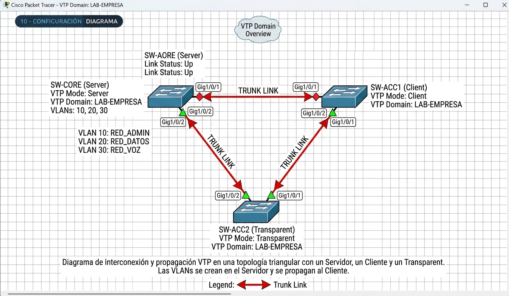

VTP
VLAN Trunking Protocol
Administración, sincronización y seguridad de VLANs entre switches Cisco mediante enlaces troncales.
¿Qué es VTP?
VTP es un protocolo de mensajería de Capa 2 propiedad de Cisco que distribuye la definición de las VLAN entre switches que pertenecen al mismo dominio administrativo.
Centraliza la administración
El administrador puede crear, modificar o eliminar VLANs en un switch autorizado y propagar esos cambios hacia otros switches del dominio.
Viaja por troncales
Los anuncios VTP se transmiten mediante enlaces troncales. Los puertos configurados como access no participan en el intercambio de mensajes VTP.
No configura todo
VTP distribuye la definición de VLANs, pero no asigna puertos de acceso, no crea troncales y no configura interfaces virtuales o direccionamiento IP.
Información que sí se propaga
Identificador de VLAN, nombre, tipo, MTU, estado, índice 802.10 (SAID) e información relacionada con VTP pruning.
Configuración que permanece local
Asignación de puertos access, modo del puerto, VLANs permitidas, VLAN nativa, SVI, direccionamiento IP, spanning tree y otras configuraciones fuera de la base de datos de VLAN.
Dominio VTP
Es el conjunto de switches conectados mediante troncales que comparten el mismo nombre de dominio y, si se configuró, la misma contraseña.
El nombre puede tener hasta 32 caracteres y distingue entre mayúsculas y minúsculas.
Archivo vlan.dat
La base de datos de VLAN se almacena en vlan.dat en la memoria flash, independientemente de la startup-config.
Por ello, un write erase no elimina automáticamente la base de datos de VLAN ni su número de revisión.
Rangos y mensajes de VTP
Normal vs. extendido
En VTP v1 y v2 se anuncia el rango normal 1–1005. Las VLANs del rango extendido, de 1006–4094, pueden configurarse localmente en Transparent u Off.
VTP v3 permite propagar VLANs hasta el rango 1–4094.
Principales mensajes
Summary Advertisement, Subset Advertisement, Advertisement Request y VTP Join.
Los Summary Advertisement se envían periódicamente cada 300 segundos y también después de cambios en la base de datos.
| Mensaje | Código | Contenido / función | Cuándo aparece |
|---|---|---|---|
| Summary Advertisement | 0x01 | Dominio, revisión, identidad, marca de tiempo, digest MD5 y número de subsets. | Cada 300 s y después de cambios. |
| Subset Advertisement | 0x02 | Detalle de las VLANs: ID, nombre, tipo, MTU, estado y SAID. | Después de un Summary con cambio. |
| Advertisement Request | 0x03 | Solicita Summary y los subsets correspondientes. | Reinicio, cambio de dominio o falta de subsets. |
| VTP Join | 0x04 | Informa las VLANs necesarias en cada puerto troncal. | Se utiliza con VTP pruning. |
¿Cómo viajan los mensajes?
Los mensajes VTP utilizan Ethernet con LLC/SNAP, el OUI de Cisco 00-00-0C, el tipo de protocolo 0x2003 y la dirección multicast 01-00-0C-CC-CC-CC.
No utilizan IP y solo se emiten por puertos operando como troncales.
Server, Client, Transparent y Off
Cada modo define qué puede hacer un switch con la base de datos de VLAN y si participa en la sincronización.
Server
AdministraciónPermite crear, modificar y eliminar VLANs en el rango normal. Los cambios incrementan el número de revisión y se anuncian por los troncales.
En VTP v1/v2 pueden existir varios servidores dentro del mismo dominio.
Client
SincronizaciónNo permite modificar las VLANs desde la CLI. Acepta anuncios válidos con revisión mayor, aplica la base recibida y puede retransmitirla.
Transparent
AutónomoMantiene una base de datos de VLAN propia y no sincroniza sus cambios con el dominio.
Puede retransmitir anuncios recibidos por sus troncales y su número de revisión permanece en 0.
Off
AisladoMantiene su propia información local, pero no participa ni retransmite anuncios VTP.
Es útil en equipos que deben quedar aislados del intercambio de mensajes VTP.
| Característica | Server | Client | Transparent | Off |
|---|---|---|---|---|
| Crear / modificar / eliminar VLANs | Sí | No | Sí, localmente | Sí, localmente |
| Se sincroniza | Sí | Sí | No | No |
| Origina anuncios | Sí | No crea información nueva | No | No |
| Revisión | Se incrementa | Adopta la recibida | 0 | 0 |
| Uso típico | Administración central | Acceso / distribución | VLANs propias o aislamiento parcial | Aislamiento total de VTP |
El número de revisión: el dato que puede salvar la red... o destrozarla
El configuration revision number es un contador de 32 bits asociado a la base de datos de VLAN. En VTP v1/v2, la revisión mayor se considera la más reciente.
Valor inicial
La revisión comienza en 0.
Se incrementa
Un Server aumenta la revisión con cada alta, baja o modificación de una VLAN.
Adopta el valor
Un Client sincronizado adopta el número de revisión recibido y no lo incrementa por sí mismo.
Cambio local
Se modifica una VLAN en el Server.
Summary
Se anuncia la nueva revisión.
Validación
Dominio, versión y digest son comprobados.
Comparación
Se compara la revisión local con la recibida.
Sincronización
Si la revisión es mayor, reemplaza la base.
¿Qué pasa?
El receptor obtiene los subsets y sustituye su base de datos por la recibida.
No existe una fusión entre ambas bases. Las VLANs locales que no aparecen en el anuncio pueden desaparecer.
¿Qué pasa?
El receptor no sobrescribe su base de datos y anuncia su propia información al vecino.
El Server realiza un cambio
Por ejemplo, una VLAN pasa de revisión 5 a revisión 6.
Envía Summary + Subsets
El Summary informa la revisión y los Subset Advertisements llevan los detalles de las VLANs.
El receptor valida el anuncio
Comprueba dominio, integridad, contraseña y versión.
Compara la revisión
En v1/v2, una revisión recibida mayor puede reemplazar la base completa.
El anuncio continúa por la topología
El receptor lo retransmite por sus demás troncales cuando corresponde.
Cómo llevar el número a 0
Antes de conectar un switch usado a una red con VTP, el número de revisión debe restablecerse.
Cambiar temporalmente a modo Transparent.
Cambiar temporalmente el nombre del dominio.
Borrar vlan.dat y recargar el equipo.
Puerto Troncal (Trunk Port)
Un puerto troncal es un puerto de switch configurado para transportar el tráfico de múltiples VLANs a través de un solo enlace físico, manteniendo la separación lógica de la red.
¿Cómo funciona?
Etiquetado VLANPara distinguir a qué VLAN pertenece cada trama de datos que cruza el enlace troncal, se utiliza un estándar de etiquetado:
IEEE 802.1Q (Dot1q): Estándar universal que añade una etiqueta de 4 bytes a la trama Ethernet original con el VLAN ID.
VLAN Nativa: VLAN específica en el puerto troncal cuyo tráfico viaja sin etiqueta. Por defecto suele ser la VLAN 1, pero se recomienda cambiarla por seguridad.
Casos de uso
Aplicación prácticaSwitch a Switch: Extiende las VLANs a lo largo de toda la infraestructura de la red.
Switch a Router: Enrutamiento inter-VLAN mediante una sola interfaz física con subinterfaces.
Switch a Servidor: Entornos de virtualización (VMware, Proxmox) alojando VMs en distintas VLANs.
! ---- Ejemplo de configuración ---- interface GigabitEthernet0/1 description Enlace Troncal hacia Switch-Core switchport mode trunk switchport trunk native vlan 99 switchport trunk allowed vlan 10,20,30
| Comando | ¿Para qué sirve? |
|---|---|
interface GigabitEthernet0/1 |
Selecciona el puerto físico del switch que se va a configurar y entra al modo de configuración de interfaz. |
description Enlace Troncal... |
Asigna una etiqueta o texto descriptivo para facilitar la documentación administrativa. |
switchport mode trunk |
Cambia el puerto de modo Acceso a modo Troncal, permitiendo transportar tramas de múltiples VLANs. |
switchport trunk native vlan 99 |
Define la VLAN Nativa cuyo tráfico cruzará el puerto sin etiqueta (untagged). Se recomienda cambiar la VLAN 1 por defecto. |
switchport trunk allowed vlan 10,20,30 |
Aplica un filtro de seguridad para limitar el paso solo a las VLANs indicadas, evitando tráfico innecesario. |
! ---- Comando de verificación ---- show interfaces trunk
| Característica | Puerto de Acceso (Access) | Puerto Troncal (Trunk) |
|---|---|---|
| Pertenencia | Pertenece a una sola VLAN. | Soporta múltiples VLANs simultáneamente. |
| Etiquetado | Envía tramas sin etiqueta a una sola VLAN. | Envía tramas etiquetadas (802.1Q) y una nativa sin etiqueta. |
| Uso común | Dispositivos finales (PCs, impresoras, teléfonos IP). | Interconexión entre switches, routers o servidores virtuales. |
VTP sobre IEEE 802.1Q
VTP depende de la existencia de un troncal operativo. Sin enlace troncal funcional, no existe intercambio de anuncios entre los switches.
Etiqueta VLAN
El encabezado 802.1Q agrega 4 bytes a la trama Ethernet.
12 bits
Permite identificar VLANs de 1 a 4094, reservando los valores 0 y 4095.
VLAN 1
Los protocolos de control de Cisco como VTP, DTP, CDP, PAgP y UDLD utilizan la VLAN 1.
Componentes de la etiqueta 802.1Q
| Campo | Tamaño | Función |
|---|---|---|
| TPID | 16 bits | Identifica una trama etiquetada, valor 0x8100. |
| PCP | 3 bits | Prioridad de servicio. |
| DEI | 1 bit | Indicador de descarte elegible. |
| VID | 12 bits | Identificador de VLAN. |
Formación del troncal
DTP puede negociar la formación de un troncal. Dos puertos en dynamic auto no forman un troncal entre sí.
VTP pruning
Reduce la inundación de broadcast, multicast y unicast desconocido cuando una VLAN no necesita cruzar determinado troncal.
La VLAN 1 no es elegible para pruning y en v1/v2 se aplica a las VLANs 2–1001.
| Extremo A | Dynamic Auto | Dynamic Desirable | Trunk | Access |
|---|---|---|---|---|
| Dynamic Auto | Access | Trunk | Trunk | Access |
| Dynamic Desirable | Trunk | Trunk | Trunk | Access |
| Trunk | Trunk | Trunk | Trunk | Inconsistente |
| Access | Access | Access | Inconsistente | Access |
¿Qué necesitan dos switches para sincronizar?
| Parámetro | Requisito | Si no se cumple | Verificación |
|---|---|---|---|
| Enlace troncal | Troncal operativo en ambos extremos con 802.1Q. | VTP no cruza el enlace. | show interfaces trunk |
| Nombre de dominio | Idéntico y respetando mayúsculas/minúsculas. | Los anuncios se ignoran. | show vtp status |
| Contraseña | Igual en el dominio o ausente en todos. | El digest resulta inválido y el anuncio se descarta. | show vtp password |
| Versión VTP | Compatible entre los equipos. | Aislamiento por incompatibilidad. | show vtp status |
| Servidor | Al menos un Server o primary server en v3. | No se pueden crear ni modificar VLANs centralmente. | show vtp status |
| VLAN de control | VLAN 1 presente y VLAN nativa coherente. | Alertas y comportamiento impredecible. | show interfaces trunk |
Dominio NULL
Un switch que todavía tiene el dominio VTP sin configurar puede adoptar automáticamente el nombre del dominio recibido por un troncal y sincronizarse con él, siempre que no exista un conflicto de contraseña.
VTP v1, v2 y v3
| Característica | VTP v1 | VTP v2 | VTP v3 |
|---|---|---|---|
| Rango propagado | 1–1005 | 1–1005 | 1–4094 |
| Transparent | Reenvía con coincidencia de dominio y versión | Reenvía sin verificar dominio | Reenvía anuncios v3 según dominio |
| TLVs desconocidos | Los descarta | Los conserva y propaga | Los conserva y propaga |
| Control de escritura | Cualquier Server | Cualquier Server | Solo primary server |
| Protección contra revisión mayor | No | No | Sí, mediante el esquema de primary server |
| Contraseña | MD5 | MD5 | Puede utilizar hidden / secret |
| Funciones propagadas | VLAN | VLAN | VLAN, MST y otras funciones |
| Pruning | 2–1001 | 2–1001 | 2–4094 |
Compatibilidad
v1 y v2 no funcionan de manera completamente transparente en un mismo dominio. Un equipo que solamente soporte v1 puede quedar aislado cuando el dominio opere en v2.
Migración
VTP v3 puede coexistir con v2 bajo ciertas condiciones, aunque en ese escenario solo se propaga el rango normal. La compatibilidad debe validarse según plataforma y versión del software.
Prevención de desconfiguraciones
VTP puede simplificar la administración, pero su mecanismo de sincronización exige controles para evitar errores y conexiones no autorizadas.
Sobrescritura accidental
Un switch reutilizado puede conservar una revisión alta y, al ser conectado al dominio, sustituir la base de datos existente.
Inyección maliciosa
Un dispositivo podría intentar negociar un troncal mediante DTP y enviar anuncios VTP con una revisión alta.
Dominio sin contraseña
La ausencia de autenticación aumenta la exposición a anuncios no autorizados desde vecinos conectados.
Cambios no controlados
Tener múltiples Servers en v1/v2 puede provocar inconsistencias cuando no existe un procedimiento de gestión de cambios.
Utilizar una contraseña coherente en todo el dominio.
Utilizar primary server cuando la plataforma lo permita.
Aislar equipos que no necesitan sincronización.
Llevar la revisión a 0 antes de conectar switches usados.
Fijar modos de puerto y utilizar nonegotiate.
Respaldar vlan.dat y registrar la revisión.
Prescindir de VTP
El informe también plantea una alternativa: configurar los switches en Transparent u Off y administrar las VLANs mediante automatización, por ejemplo Ansible o un controlador de red.
Conectar un switch externo de forma segura
1. Aislar el equipo
Conectarse por consola y mantener el switch sin cables hacia producción.
2. Revisar VTP
Ejecutar show vtp status para conocer dominio, modo y revisión.
3. Llevar revisión a 0
Cambiar a Transparent o borrar vlan.dat y recargar.
4. Configurar el troncal
Utilizar trunk, nonegotiate, VLANs permitidas y VLAN nativa coherente.
5. Establecer dominio y contraseña
Configurar los datos de producción después de haber restablecido la revisión.
6. Conectar a producción
Conectar el cable cuando el equipo ya esté preparado.
7. Verificar
Comprobar show vtp status, show vlan brief y verificar que la revisión del Server no haya cambiado.
Ejemplo práctico con VTP v2
Ejemplo basado en el laboratorio del informe: un switch Server, un Client, un transparent y un enlace troncal entre ambos, los comandos que se muestra a continuacion son los que utilizamos para realizar nuestra topologia. Este ejemplo esta centrado para un laboratorio de una empresa, por lo que los nombres van de acuerdo a ellos y el dominio de igual manera. Para darnos una idea de como se tiene que estructurar nuestra topologia, adjuntamos una imagen en la parte de abajo.
! ---- SW-CORE (Server) ---- SW-CORE(config)# vtp domain LAB-EMPRESA #se le asigna un dominio SW-CORE(config)# vtp version 2 #elegimos la version de vtp que estaremos utilizando SW-CORE(config)# vtp mode server #asignamos el modo al que pertenecera nuestro switch SW-CORE(config)# vtp password Cisco2026! #asignamos una contraseña SW-CORE(config)# vlan 10 #creamos una nueva vlan SW-CORE(config-vlan)# name RED_ADMIN #le asignamos un nombre a la vlan, realizamos este mismo proceso con las vlans que se quieran crear SW-CORE(config-vlan)# vlan 20 SW-CORE(config-vlan)# name RED_DATOS SW-CORE(config-vlan)# vlan 30 SW-CORE(config-vlan)# name RED_VOZ
! ---- SW-ACC2 (Transparent) ---- SW-ACC2(config)# vtp domain LAB-EMPRESA #se le asigna un dominio SW-ACC2(config)# vtp version 2 #elegimos la version de vtp que estaremos utilizando SW-ACC2(config)# vtp mode transparent #asignamos el modo al que pertenecera nuestro switch SW-ACC2(config)# vtp password Cisco2026 #asignamos una contraseña Debemos recordar que para que el tráfico pase correctamente a través del switch transparente hacia una VLAN que existe en el Server, debes crear manualmente el ID de esa VLAN en el switch transparente. De lo contrario, los paquetes etiquetados con esa VLAN serán descartados al llegar a sus puertos de acceso o de enlace. SW-ACC2(config)# vlan 10 #Creamos el id de la vlan
! ---- SW-ACC1 (Client) ---- SW-ACC1(config)# vtp domain LAB-EMPRESA #se le asigna un dominio SW-ACC1(config)# vtp version 2 #elegimos la version de vtp que estaremos utilizando SW-ACC1(config)# vtp mode client #asignamos el modo al que pertenecera nuestro switch SW-ACC1(config)# vtp password Cisco2026 #asignamos una contraseña Debemos recordar que un switch configurado en modo cliente, no puede crear, modificar, ni configurar vlans, su funcion se basa en transportar el trafico de las vlans creadas en el switch server, y en los puertos que han sido asignadas desde el server. Se encarga de transportar el trafico de paquetes.
! ---- Configuracion de puertos troncales ---- SW-ACC2(config)# interface GigabitEthernet1/0/1 SW-ACC2(config-if)# switchport trunk encapsulation dot1q SW-ACC2(config-if)# switchport mode trunk SW-ACC2(config-if)# switchport nonegotiate Recordemos que: Debes configurar los puertos en modo Trunk (enlace troncal) en los 3 switches de la topología. Para que VTP funcione y las VLANs puedan transmitirse a través de toda la red, ambos extremos de cada enlace troncal deben estar configurados como Trunk Por lo que se realizara esta configuracion en los tres switches, solo cambiendo y colocando sus respectivos puertos
Aqui podemos observar el comando que tenemos para verificar el status vtp de cada switch.
Si queremos verificar que puertos estan configurado en el switch server es con el "show vlan brief"
SW-CORE# show vtp status
VTP Version capable : 1 to 3
VTP version running : 2
VTP Domain Name : LAB-EMPRESA
VTP Pruning Mode : Disabled
VTP Traps Generation : Disabled
Feature VLAN:
--------------
VTP Operating Mode : Server
Maximum VLANs supported locally : 1005
Number of existing VLANs : 8
Configuration Revision : 3

Diagrama de interconexión y propagación VTP entre Server y Client.Comandos de verificación
show vtp status
Muestra versión, dominio, modo, revisión, VLANs, pruning y otros datos.
show vtp counters
Muestra contadores de mensajes y errores relacionados con digest o versión.
show interfaces trunk
Permite revisar troncales, encapsulación, VLAN nativa y VLANs permitidas.
show vlan brief
Presenta la base de datos de VLAN y puertos asignados.
show interfaces switchport
Muestra modo administrativo, modo operativo y negociación DTP.
show vtp password
Muestra información de la contraseña VTP según versión y configuración.
¿Qué debemos recordar?
VTP simplifica
Reduce la carga administrativa al mantener coherentes las VLANs entre múltiples switches.
La revisión importa
En v1/v2, el número de revisión puede determinar cuál base de datos termina imponiéndose.
Los troncales son esenciales
VTP depende del intercambio de mensajes mediante enlaces troncales operativos.
La seguridad es necesaria
Contraseña, DTP controlado, revisión en 0, respaldos y gestión de cambios reducen riesgos.
VTP v3 cambia el control
El modelo primary/secondary reduce la ambigüedad sobre quién tiene autoridad para modificar la base.
También existe otra opción
Puede prescindirse de VTP y administrar las VLANs mediante configuración local o automatización.
Glosario de Términos
Explora los términos técnicos esenciales de VTP, VLANs y conmutación de redes Cisco.
Preguntas sobre VTP
Responde el cuestionario para comprobar tus conocimientos sobre VTP, VLANs, sincronización, troncales 802.1Q y seguridad.
Cuestionario interactivo
Puedes responder las preguntas directamente desde esta página.